lecnotes
Table of Contents
- 1 about
- 2 notation
- 3 linear regression
- 4 logistic regression
- 5 regularization
- 6 neural networks: representation
- 7 neural networks: learning
- 8 advice for applying machine learning
- 9 machine learning system design
- 10 SVM
- 11 clustering
- 12 dimensionality reduction
- 13 anomaly detection
- 14 recommender systems
- 15 large-scale machine learning
- 16 application example: photo OCR
1 about
2 notation
- \(m\), \(n\): number of training examples
- \(x\)'s: input variables or features
- \(y\)'s: output variable or "target" variables
- \(x^{(i)}\): input features of ith training example
- \(x_j^{(i)}\): value of feature \(j\) in ith training example
- \((x,y)\): one training example
- \((x^{(i)}, y^{(i)})\): specific example (ith training example)
- \(h\): hypothesis (maps \(x\)'s from \(y\)'s)
- \(\theta_i\): parameters
- \(h_{\theta}(x) = p(y=1|x;\theta)\) read as probability that y=1 given x parameterized by θ.
neural nets
- \(a_i^{(j)}\): activation of unit i in layer j
- \(\Theta^{(j)}\): matrix of weights controlling function mapping from layer j to j+1.
- \(\delta_j^{(l)}\) is the error of node j in layer l
3 linear regression
supervised: given the "right answer" for each example in the data
regression: predict real-valued output
3.1 cost function
Given a hypothesis \(h_{\theta}(x) = h(x) = \theta_0 +\theta_1x\), we want to minimize the cost function \(J(\theta)\) \[ \min_{\theta_0,\theta_1} J(\theta_0,\theta_1) = \tfrac{1}{2m} \sum_{i=1}^m (h_{\theta}(x^{(i)}) -y^{(i)})^2 \] \(h_{\theta}(x)\) for fixed \(\theta\) is a function of \(x\). Meanwhile, \(J(\theta)\) is a function of the parameter \(\theta\). The relation between the two is that shifts in the parameters for \(h_{\theta}(x)\) draws different curves, while for \(J(\theta)\) it draws different points (a locus?).
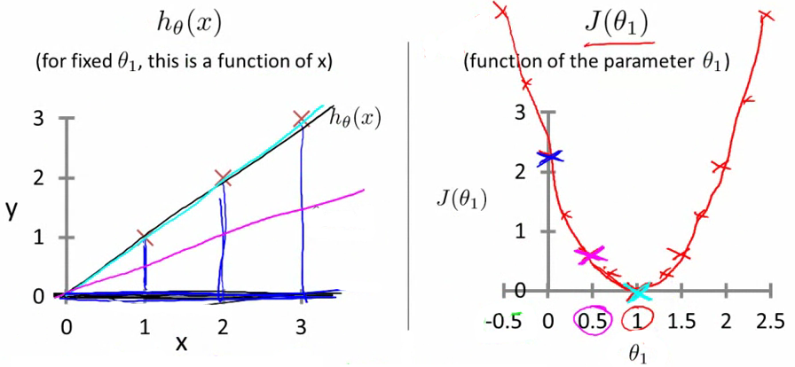
Different hypothesis curves for various $θ$, but different cost function points for various $θ$.
3.2 gradient descent
repeat until convergence \[ \theta_j := \theta_j -\alpha\frac{\partial}{\partial \theta_j} J(\theta) \] for \(j=0,1,...\) simulatenously updated (ie. temp0 := θ0 …, temp1 := θ1 …, then θ0 := temp0, θ1 := temp1).
As it approaches a local minimum, gradient descent will automatically take smaller steps. So one need not decrease α over time.
3.3 gradient descent for linear regression
for linear regression, the cost function is a convex function (so there is always a single optima).
"batch" (use all training examples)
3.4 extensions
- can solve for linreg exactly
- learn with larger number of features (input vars)
3.5 multivariate linear regression (multiple features)
\(h_{\theta}(x) = \theta_0 +\theta_1 x_1 + \dots +\theta_n x_n\). To simplify notation, define \(x_0 = 1\), then the hypothesis \(h_{\theta}(x) = \theta^T x\) (θ and x are by default n+1 dim column vectors). The cost function \(J(\theta) = \tfrac{1}{2m}\sum_{i=1}^m (h_{\theta}(x^{(i)}) -y^{(i)})^2\).
gradient descent on this new cost function is, for n \geq 1: repeat: \[ \theta_j := \theta_j -\alpha\cdot\frac{1}{m} \sum_{i=1}^m (h_{\theta}(x^{(i)}) -y^{(i)})x_j^{(i)} \] and simulatenouly update θj for \(j=0,\dots,n\).
3.6 feature scaling and mean normalization (ie. standarization)
make sure features are on a similar scale (to make gradient descent converge more quickly).
ex. x1 = size (0-2000 sq ft), x2 = number of bedrooms (1-5), change into, x1 = size/2000, x2 = num bedrooms/5
make the contours more circular?
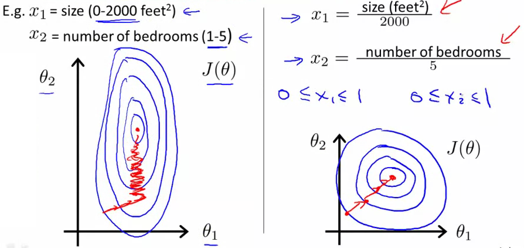
Unscaled vs. scaled feature (less eccentric circular contours)
more generally, get every feature into an approximately -1 \leq xi \leq 1 range.
Some people also do more mean normalization by replacing \(x_i\) with \(x_i -\mu_i\) to make features have approximate zero mean (does not apply to \(x_0 = 1\)) ex. x1 = (size-1000)/2000, x2 = (num bedrooms-2)/5
more formally, we are standarizing the feature by doing x1 <- (x1 -μ1)/s1, where s1 is the standard deviation (so "standarization" means "feature scailing" and "mean normalization").
3.7 learning rate
how to make sure gradient descent is working, and choosing α.
\(J(\theta)\) should decrease after every interation. Look at the plot:
automatic convergence test: declare if \(J(\theta)\) decreases by less than ε = 10-3 in one iteration (however, choosing ε is difficult).
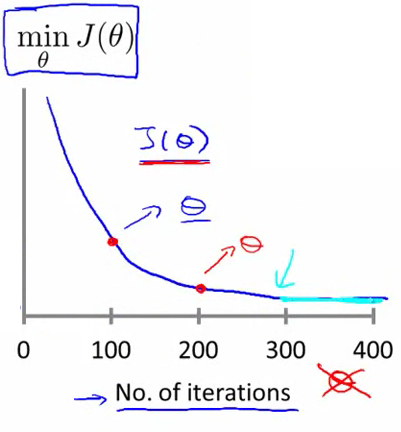
Plotting the cost function and checking for monotonically decreasing cost
However, if \(\alpha\) is too small, the convergence will be slow. If \(\alpha\) is too large, it might overshoot (oscillating, also causing slow convergence) or diverge.
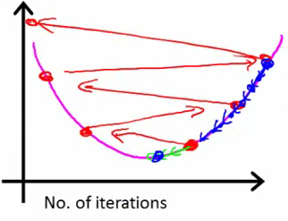
α is too large (zigzag) or too small (small gradient)
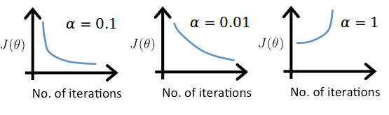
good convergence (left) vs. slow convergence (center) vs. divergence (right) (relatively, and like on specific assumptions about the cost function)
3.8 polynomial regression
for housing prices, could do θ1 * frontage + θ2 * depth, or can combine into area = frontage * depth, so have θ1 * area.
(later in the course he will introduce algorithms for automatically choosing features).
3.9 normal equation
method to solve for θ analytically. Take partial derivative of J(θ) and set to 0. Then after some math, \(\theta = (X^T X)^{-1} X^T y\), where X is the design matrix of the training data, and y is the output. It is constructed as \[ X = \begin{bmatrix} ... (x^{(1)})^T ...\\ \vdots\\ ... (x^{(m)})^T ...\\ \end{bmatrix} \] and \(x^{(i)} = [1, x_1^{(i)}] \in \mathbb{R}^{n+1}\). (the "1" is to remove the need for a separate offset term (ie. instead of \(\theta^T x +b\), one can use \(\theta^T x\) and drop the b term)).
gradient descent: works well with large n. normal eq: need to compute (XT X)-1 (X is a nxn matrix, and inversion is about O(n3)).
What if \(X^T X\) is non-invertible (called singular or degenerate)? Causes are that there are redundant features (linearly dependent) (ex. x1 = size in sq feet, and x2 = size in sq m), or there are too many features (m \leq n) (delete some features, or use regularization).
4 logistic regression
4.1 motivation
We trying to predict a variable \(y \in \{0,1\}\), where "0" is the negative class, and "1" is the positive class.
| x x x x x x x | | | o | | ---x x x x x------------------------>
One could use linear regression, where \(h_{\theta}(x) = \theta^Tx\), and if \(h_{\theta}(x) \geq 0.5\) then \(y=1\). One problem is that if one adds an (influential) outlier, then the threshold changes, even though intuitively, for the above data set, the threshold should remain the same. Another problem is that \(h_{\theta}(x)\) can be > 1 or < 0, yet y is supposed to output in \(\{0,1\}\).
Instead, one should use logistic regression (actually a classification algorithm) where \(0 \leq h_{\theta}(x) \leq 1\).
4.2 hypothesis representation
Instead of \(\theta^T x\), use \(h_{\theta}(x) = g(\theta^T x)\), where \(g(z) = 1/(1 +e^{-z})\) is the sigmoid or logistic function.
\(h_{\theta}(x)\) is the estimated probability that \(y = 1\) on input x, or more formally, the probability that y=1 given x parameterized by θ is \(h_{\theta}(x) = p(y=1|x;\theta)\) (\(h_{\theta}(x)\) is a real-value on [0,1], but y is a binary variable in \(\{0,1\}\)).
4.3 decision boundary
Since \(h_{\theta}(x)\) is a probability, to use it a classifier, one could try \(y=1\) if \(h_{\theta}(x) \geq 0.5\), and y=0 else. Since \(g(z) \geq 0.5\) when \(z \geq 0\), then \(h_{\theta}(x) = g(\theta^T x) \geq 0.5\) when \(\theta^T x \geq 0\).
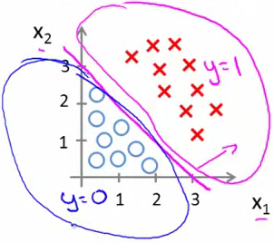
The hypothesis hθ(x) = g(-3 +x1 +x2) with decision boundary
y=1 if \(h_{\theta}(x) = g(-3 +x_1 +x_2) \geq 0\)
Note that the decision boundary is a property of the hypothesis, not the data set. You could take away the data, and you would still have a "boundary" drawn. In other words, a hypothesis defines a boundary (of where the data will be).
Higher order terms can be added to the decision boundary.
.png)
The hypothesis hθ(x) = g(-1 +x12 +x22) with decision boundary
4.4 cost function
Given m examples \(x \in [x_0 \dots x_n]\), \(x_0 = 1\), \(y \in \{0,1\}\), and \(h_{\theta}(x) = 1/(1 +e^{-\theta^T x})\), how does one choose \(\theta\)? One could define \[ J(\theta) = \frac{1}{m} \sum_i \text{Cost}(h_{\theta}(x^{(i)}),y) \] where \(\text{Cost}(h_{\theta}(x),y) = \tfrac{1}{2} (h_{\theta}(x) -y)^2\). However, one cannot use this because it is non-convex (has many local optima), and one wants the cost function to be convex because then gradient descent will not get trapped in local optima.
Instead, for logistic regression, use the cost function \[ \text{Cost}(h_{\theta}(x),y) = \begin{cases} -\log(h_{\theta}(x)) & y=1\\ -\log(1 -h_{\theta}(x)) & y=0 \end{cases} \] That is, it is the cost of h at x output's when it is actually y.
This has some good properties. For y=1, Cost = 0 when \(h_{\theta}(x)=1\). However, as \(h_{\theta}(x) \to 0\), \(\text{Cost} \to \infty\) (penalizing the algorithm). For y=0, it is the mirror along x=0.5 of the y=1 case. It is also convex. Visually:
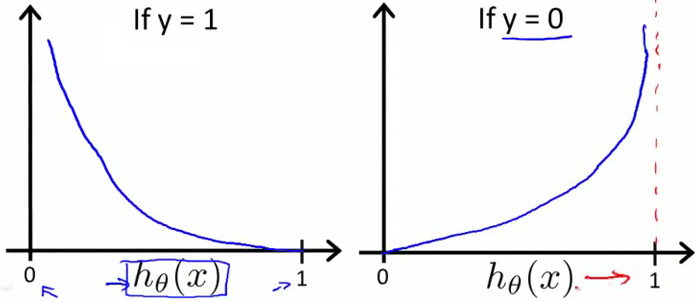
Logistic regression cost function
More compactly \[ \text{Cost}(h_{\theta}(x),y) = -y \log (h_{\theta}(x)) -(1-y) \log(1 -h_{\theta}(x)) \] (derivable from maximum liklihood, and is convex), hence \[ J(\theta) = -\frac{1}{m} \sum_{i=1}^m y^{(i)} \log (h_{\theta}(x^{(i)})) +(1-y^{(i)}) \log(1 -h_{\theta}(x^{(i)})) \] To fit the parameters, use (batch) gradient descent: \[ \theta_j := \theta_j -\alpha \frac{\partial}{\partial \theta_j} J(\theta) = \theta_j -\alpha \sum_{i=1}^m (h_{\theta}(x^{(i)}) -y^{(i)})x_j^{(i)} \] The form of BGD is the same, but the definition of hθ(x) has changed, ie. \(h_{\theta}(x) = \tfrac{1}{1 +e^{-\theta^T x}}\).
Don't forget to use feature scailing for logistic regression as well.
Other optimization algorithms, such as conjugate gradient, BFGS, or L-BFGS, can also compute \(J(\theta)\) and \(\tfrac{\partial}{\partial \theta_j} J(\theta)\). These automatically pick \(\alpha\) (using an inner loop doing line-search), and often converge faster than gradient descent. However, they are more complex.
4.5 multiclass classification
In one-vs-all (aka. one-vs-rest), turn the problem into N separate binary classifications. ex. for N=3, for class 1, merge class 2 and 3, and fit \(h_{\theta}^{(1)}(x)\) where the $.(1)$ is for class 1, and so on, fitting \(h_{\theta}^{(i)}(x) = P(y=i|x;\theta)\)

One-vs-all for N=3
Note that formulating the problem as "hθ(x) > 0$, then y=1, etc., hides too much when thinking about multiclass LR. Instead, because \(h_{\theta}^{(i)}(x)\) assigns a probability, for a given x, pick i where \(h_{\theta}^{(i)}(x)\) has the largest probability.
5 regularization
"underfit" or "high bias", where it doesn't fit training data very well ("bias" means here "strong preconception"). "overfit" or "high variance", where the space of hypothesis is too large.

Under-, right-, and over-fit
Overfitting occurs when, if we have too many features (and too few examples), the learned hypothesis may fit the training set very well, but fails to generalize to new examples.

Under-, right-, and over-fit for linear regression
One can address overfitting by (1) reducing num features (manually select "important" features, or later will introduce a model selection algorithm), or (2) regularization, where one keeps all features, but reduce magnitudes/values of \(\theta_j\) (this works well when we have many features that each contribute a little bit).
5.1 cost function
For regularized linear regression \[ \min_{\theta} \frac{1}{2m} \sum_{i=1}^m (h_{\theta}(x^{(i)}) -y^{(i)})^2 +\lambda \sum_{i=1}^n \theta_j^2 \] where λ is the regularization parameter. (Note that we won't penalize \(\theta_0\) by convention). The last term is the penalization term to favour a "simpler" hypothesis, making it less prone to overfitting. A large λ penalizes large values of θ, amplifying those values in the cost function, thus affecting them more than small values.
In the "Under-, right-, and over-fit" figure, imagine we penalize \(\theta_3\) and \(\theta_4\). This lowers those two terms towards zero, moving the model back towards the "right-fit" (middle) figure.
However, if λ is too large the result is underfitting.
Since we don't know which parameters are "irrelevant", in regularization we are shrinking all of them (this seems a little heavy-handed).
5.2 regularized linear regression
simulatenously update \begin{align*} \theta_j &:= \theta_j -\alpha \left[\frac{1}{m} \sum_{i=1}^m (h_{\theta}(x^{(i)}) -y^{(i)})x_j^{(i)} +\frac{\lambda}{m} \theta_j\right]\\ &= \theta_j -\alpha \frac{\partial}{\partial \theta_j} J(\theta)\\ &:= \theta_j (1 -\alpha\frac{\lambda}{m}) -\alpha\frac{1}{m} \sum_{i=1}^m (h_{\theta}(x^{(i)}) -y^{(i)})x_j^{(i)} \end{align*} where \((1 -\alpha\frac{\lambda}{m}) \lt 1\). In other words, we are shrinking θj a little bit, followed by gradient descent (fitting our intuition about what regularization should do).
Consider the design matrix \(X = [(x^{(1)})^T ... (x^{(m)})^T]^T\), y = \([y^{(1)} ...]^T \in \mathbb{R}^m\). To find \(\min_{\theta} J(\theta)\), take the gradient and set to zero to get \[ \theta = (X^T X + \lambda I_{n+1, \text{but where}\ (1,1) = 0} )^{-1} X^T y \] (note, the "normal equation" is \(\hat{\beta} = (X^TX)^{-1}X^Ty\), so the hat matrix would be \(X(X^TX)^{-1}X^T\) because \(\hat{y} = X\hat{\beta}\)).
If \(m \leq n\) ((#ex) < (#features)) then for \(\theta = (X^TX)^{-1}X^Ty\), \((X^TX)^{-1}\) will be non-invertible/singular/degenerate. However, if \(\lambda > 0\), that matrix is invertible.
5.3 regularized logistic regression
and for gradient descent, simulatenously do \[ \theta_j := \theta_j -\alpha \left[\frac{1}{m} \sum_{i=1}^m (h_{\theta}(x^{(i)}) -y^{(i)})x_j^{(i)} +\frac{\lambda}{m} \theta_j\right] \] (ie. same thing as regularized linear regression, but a different h).
6 neural networks: representation
6.1 non-linear classification
Logistic regression with complex polynomial terms might work when the number of features is small. But many problems use many more features. Even if one only uses 2nd order terms, the number of features grows O(n2). One could then try using only a subset, but this could prevent interesting hypothesis because the number of features used is reduced.
6.2 neurons and the brain
The "one learning algorithm" hypothesis for the brain says, if you rewire a sense pathway (neuro rewiring hypothesis), then it will learn that organ's function.
6.3 model representation
notation:
- \(a_i^{(j)}\): activation of unit i in layer j
- \(\Theta^{(j)}\): matrix of weights controlling function mapping from layer j to j+1.
- \(\Theta_{ji}^{(l)}\): weight from unit i in layer l, to unit j in layer l+1
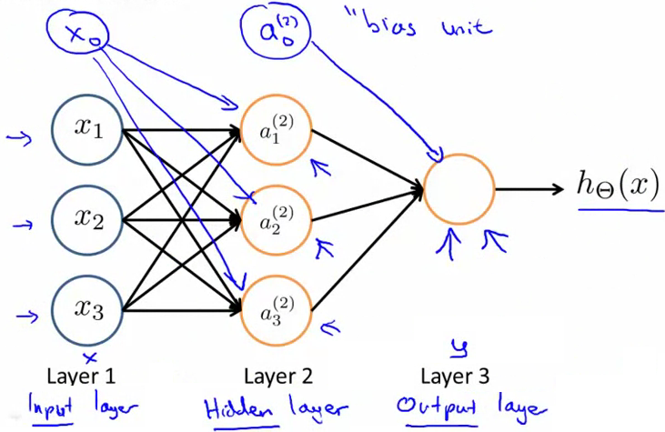
NN representation showing input, hidden, and output layer, plus the bias units
x0 is bias unit (but is always equal to 1, and hence sometimes is dropped).
\(h_{\Theta} = 1/(1 +\exp(-\Theta^T X))\) is called the sigmoid (logistic) activation function, and \(\Theta\) is called the parameters, or weights.
Imagine you cover layer 1. The result is \(h_{\Theta} = g(\Theta_{10}^{(2)}a_0^{(2)} + \Theta_{11}^{(2)}a_1^{(2)} + \Theta_{12}^{(2)}a_2^{(2)} + \Theta_{13}^{(2)}a_3^{(2)})\), which is the same form of model used in logistic regression.
If a network has \(s_j\) units in layer j, \(s_{j+1}\) units in layer j+1, then \(\Theta^{(j)}\) will have the dimension \(s_{j+1} \times (s_j +1)\). So if there are two inputs nodes in layer 1, that are mapped onto four nodes in layer 2, then \(\Theta^{(1)}\) will be 4x3 (= 4x(2+1))). (Every output from an activation goes as input to every node in the following layer (there are to be no unconnected wires)).
(Depending on how many layers and the input to output number, these types of parameters are called the NN's architecture).
6.3.1 forward propagation
Forward propagation is the process of computing \(h_{\Theta}(x)\). Let \(z^{(2)} = \Theta^{(1)}x = \Theta^{(1)}a^{(1)}\), \(a^{(2)} = g(z^{(2)})\) (with \(a_0^{(2)} = 1\) by default), and so on. \(z^{(3)} = \Theta^{(2)}a^{(2)}\), so \(h_{\Theta}(x) = a^{(3)} = g(z^{(3)})\).
Again imagine that you cover layer 1. Forward propagation shows that a NN is learning its own features in the hidden layer, and then performing its own logistic regression (but without having to create very large polynomial terms in the feature mapping done in logistic regression).
6.3.2 examples
Let \(x_1,x_2 \in \{0,1\}\). We want to compute \(y = x_1 \text{XNOR}\ x_2\). However first break it down into simpler function.
For NOT, it seems intuitive that if we use a sigmoid function, one should put a large negative value on input x1 to "reverse" the value it would produce.

NN NOT
If we find the weights for AND, (NOT x1) AND (NOT x2), and OR, and put them together, we can get XNOR.

NN XNOR
(video: shows handwritten digit recognition for it, rotation, random noise, structured noise, bolding, and multiple segments).
6.4 multiclass classification
Previously we used \(y \in \{1,2,3,4\}\). However this time we will use \(h_{\theta}(x) \approx [1,0,0,0]\) (pedestrian), [0,1,0,0] (car), [0,0,1,0] (motorcycle), etc.
7 neural networks: learning
7.1 cost function
The cost function is a generalization of the cost function in logistic regression \[ J(\Theta) = -\frac{1}{m} \left[ \sum_{i=1}^m \sum_{k=1}^K y_k^{(i)} \log (h_{\Theta}(x^{(i)}))_k + (1 -y^{(i)})\log (1 -(h_{\Theta}(x^{(i)}))_k)\right] ORG-LIST-END +\frac{\lambda}{2m} \sum_{l=1}^{L -1} \sum_{i=1}^{s_l} \sum_{j=1}^{s_l +1} (\Theta_{ji}^{(l)})^2 \] where L is the number of units in the network, \(s_l\) is the number of units (not counting the bias unit) in layer l, \(h_{\Theta}(x) \in \mathbb{R}^K\), and \((h_{\Theta}(x))_i\) denotes the ith output (and the label is equal to the \(\arg\max_i (h_{\Theta}(x))_i\)?).
The first term is like the first term in logistic regression, except now, rather than for 1 unit, we sum over k output units (\(\sum_{k=1}^K\)). The second term regularizes for each weight, with the third sum for each "from" unit, the second sum for each "to" unit, and first sum for each layer, all then multiplied by the regualization parameter.
7.2 backpropagation
(trying to calcaulate J(Θ) and its gradient)
Let \(\delta_j^{(l)}\) be the error of node j in layer l. \(\delta_j^{(l)} = a_j^{(l)} -y_j\), or vectorized, \(\delta^{(l)} = a^{(l)} -y\). This is the difference between the output value and the training value. It can be written out as \(\delta^{(3)} = (\Theta^{(3)})^T \delta^{(4)} .* g'(z^{(3)})\) (".*" element-wise multiplication), and \(g'(z^{(3)}) = a^{(3)} .* (1 -a^{(3)})\) (or \(g'(z^{(3)}) = g(z^{(3)}) .* (1 -g(z^{(3)}))\)) (note there is no \(\delta^{(1)}\) term because no err associated with input layer).
Given a training set \(\{(x^{(k)},y^{(k)})\}_{k=1}^m\), set \(\Delta_{ij}^{(l)} = 0\) for all l,i,j, then run, for i = 1 to m:
- set \(a^{(1)} = x^{(i)}\)
- perform forward propagation to compute \(z^{(l)}\), \(a^{(l)}\) for \(l=2,3,...,L\)
- using \(y^{(i)}\) compute \(\delta^{(L)} = a^{(L)} -y^{(i)}\) (the last layer's \(\delta\) is computed differently from all previous layers)
- (backpropagation) compute \(\delta^{(L-1)},\delta^{(L-2)},\dots,\delta^{(2)}\), where \(\delta^{(l)} = (\Theta^{(l)})^T \delta^{(l+1)} .* g'(z^{(l)})\)
- \(\Delta_{ij}^{(l)} := \Delta_{ij}^{(l)} +a_j^{(l)}\delta_i^{(l+1)}\), or vectorized, \(\Delta^{(l)} := \Delta^{(l)} +\delta^{(l+1)}(a^{(l)})^T\) (\(\Delta^{(l)}\) is a matrix indexed by ij).
then compute \[ D_{ij}^{(l)} := \begin{cases} \tfrac{1}{m}\Delta_{ij}^{(l)} +\tfrac{\lambda}{m}\Theta_{ij}^{(l)} & \text{if}\ j \ne 0\\ \tfrac{1}{m}\Delta_{ij}^{(l)} & \text{if}\ j=0\ \text{(bias term)} \end{cases} \] One can show that \(\tfrac{\partial}{\partial \Theta_{ij}^{(l)}} J(\Theta) = D_{ij}^{(l)}\).
backpropagation intuition

Forward propagation as a weighted sum, passed through a sigmoid

Back propagation also as a weighted sum of parameters and error term (multiplied with the derivative of a sigmoid evaluated at that unit's input value)
The difference is that in the weighted sum, for FP, it is the output activation of that unit, while for BP, it is the error (the difference in output compared to the training value).
7.3 gradient checking
Subtle bugs can be hard to detect in backprop. To check, one could use gradient checking. To do so, first compute the approximation for the two-sided difference derivative \[ \frac{d}{d\theta} J(\theta) \approx \frac{J(\theta +\epsilon) -J(\theta -\epsilon)}{2\epsilon} \] (by contrast, the one-sided difference, \(\tfrac{J(\theta +\epsilon) -J(\theta)}{\epsilon}\), is more numerically unstable).

Approximation of the derivative
Next, in the gradient, do this for each variable under question for each partial derivative \[ \begin{align*} \frac{\partial}{\partial\theta_1} J(\theta) &= \frac{J(\theta_1 +\epsilon,\theta_2,\theta_3,\dots,\theta_n) -J(\theta_1 -\epsilon,\theta_2,\theta_3,\dots,\theta_n)}{2\epsilon}\\ \frac{\partial}{\partial\theta_2} J(\theta) &= \frac{J(\theta_1,\theta_2 +\epsilon,\theta_3,\dots,\theta_n) -J(\theta_1,\theta_2 -\epsilon,\theta_3,\dots,\theta_n)}{2\epsilon}\\ \vdots &\\ \frac{\partial}{\partial\theta_n} J(\theta) &= \frac{J(\theta_1,\theta_2,\theta_3,\dots,\theta_n +\epsilon) -J(\theta_1,\theta_2,\theta_3,\dots,\theta_n -\epsilon)}{2\epsilon}\\ \end{align*} \] (\(\theta \in \mathbb{R}^n\) (an "unrolled" version of \(\Theta^{(1)}, \Theta^{(2)}, \dots\)))
Afterwards, check that gradient approximation is approximately equal to the gradient given by backprop.
7.4 random intialization
Why not initialize the weights all to 0? The activation, deltas, and partial derivatives, will each be all equal. Hence the parameters will not be different upon FP or BP. This is the problem of symmetric weights.
Random initalization does symmetry breaking. Do so by initalizing \(\Theta_{ij}^{(l)}\) to a random value in \([-\epsilon,\epsilon]\).
7.5 putting it all together
First pick an architecture. Number of input nodes equals the dimensions of the features chosen. Number of output nodes equals the number of classes. By default have one hidden layer, or more than one where there is the same number of units per layer. The more units in a hidden layer, usually the better. Finally, have the number of hidden units be comparable to the input or several times more. (He will say much more later about how to choose).
Train the NN
- rand init weights
- impl fp to get \(h_{\Theta}(x^{(i)})\) for any \(x^{(i)}\)
- compute \(J(\Theta)\)
- impl bp to compute partial \(\frac{\partial}{\partial \Theta_{jk}^{(l)}} J(\Theta)\)
The implementation could be, for i = 1:m
- perform FP on \((x^{(i)},y^{(i)})\) and get activations \(a^{(l)}\)
- perform BP on \((x^{(i)},y^{(i)})\) and get deltas \(\delta^{(l)}, l = 2,\dots,L\)
- \(\Delta^{(l)} := \Delta^{(l)} +\delta^{(l+1)}(a^{(l)})^T\)
then find \(\tfrac{\partial}{\partial \Theta_{ij}^{(l)}} J(\Theta) = D_{ij}^{(l)}\).
-
do gradient checking to compare partials computed using BP vs. numerial
estimate of gradient \(J(\Theta)\)
- then disable this code
- use optimization with backprop (which computes partials) to try and minimize \(J(\Theta)\)
Note, though \(J(\Theta)\) is non-convex, this is not much of a prob in practice.
\(h_{\Theta}(x^{(i)}) \approx y^{(i)}\) when J is low.
8 advice for applying machine learning
8.1 deciding what to try next
Hypothesis has large errors on new data. What to do?
-
get more training examples
- doesn't always help (yet a common flaw to do so)
- smaller set of features
- get additional features
- add polynomial features
- increase λ
- decrease λ
wrong method: gut feeling (wastes time on wrong path) (self: more precise to say untrained intuition, or intuition learnt in the "absence of stable regularities in the environment" (src). You will be using intuition, esp. when under a time pressure).
8.2 evaluating a hypothesis
Randomly (if ordered) split dataset into training set and test set (to ensure they have the same distribution; 70-30% typical).
Though one could calculate \(J_{\text{test}}(\theta)\), an easier metric is the misclassification error (or 0/1 misclassification error).
For logistic regression \[ \text{err}(h_{\theta}(x),y) = \begin{cases} 1 & \text{if}\ h_{\theta}(x) \geq 0.5\ \text{when}\ y=0\\ & \text{or if}\ h_{\theta}(x) \lt 0.5\ \text{when}\ y=1\\ 0 & \text{else} \end{cases} \] then test error is \(\tfrac{1}{m_{\text{test}}} \sum_{i=1}^{m_{\text{test}}} \text{err}(h_{\theta}(x^{(i)}),y^{(i)})\). (see also confusion matrix).
8.3 model selection and training/validation/test sets
How does one select the best model? One could fit \(\Theta^{(d)}\) for some degree d, then choose d the gives the best \(J_{\text{test}}(\theta)\). The problem is that the cost will be an optimistic estimate of the generalization error, because it was fit to the test set, and we chose the one that fit the test set best. Hence we don't know if it will generalize well. (ie. "If we develop new features by examining the test set, then we may end up choosing features that work well specifically for the test set, so \(J_{\text{test}}(\theta)\) is no longer a good estimate of how well we generalize to new examples.") Instead, split the data into training, (cross-)validation (cv), and test set (60-20-20%).
For each model k, find the θ(k) that minimizes \(J(\theta)\), then calculate \(J_{\text{cv}}(\theta^{(k)})\). Then pick the model that has the lowest \(J_{\text{cv}}\) with θ*, and then estimate the generalization error on the test set with \(J_{\text{test}}(\theta^*)\).
(warning, some people use the same set for cv and test. Might be ok for a "large" test set, but not good practice).
8.4 diagnosing bias vs. variance
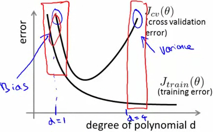
Bias (underfit) vs. variance (overfit) as a function of polynomial degree
bias (underfit): \(J_{\text{train}}(\theta)\) high and \(J_{\text{cv}}(\theta) \approx J_{\text{train}}(\theta)\).
variance (overfit): \(J_{\text{train}}(\theta)\) low but \(J_{\text{cv}}(\theta) \gg J_{\text{train}}(\theta)\).
8.5 regularization and bias/variance
The cost function \(J_{\text{train}}(\theta) = \tfrac{1}{m}\sum_{i=1}^m (h_{\theta}(x^{(i)}) -y)^2\) is the average sum of squares (and is the same too for cv and test).
Remember that since larger λ tends to suppress the parameters more, it leads to less complicated models.
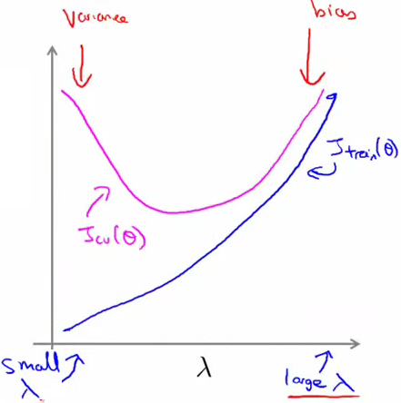
Bias vs. variance as a function of regularization
The way λ is selected is similar to model selection for θ. First try various λ for a given model (\(h_{\theta}(x)\) and \(J(\theta)\)). Then choose the model that gives the lowest \(J_{\text{cv}}(\theta^*)\), and then calculate \(J_{\text{test}}(\theta^*)\).
8.6 learning curves
Plot \(J_{\text{train}}(\theta)\) and \(J_{\text{cv}}(\theta)\), on an error vs. m (training set size) plot.
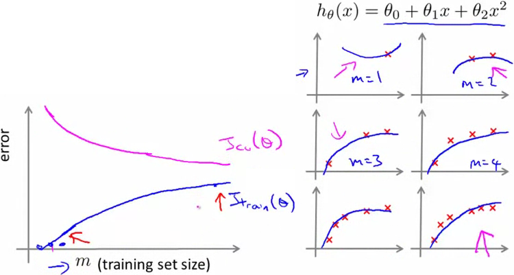
Learning curve: Error as a function of training size
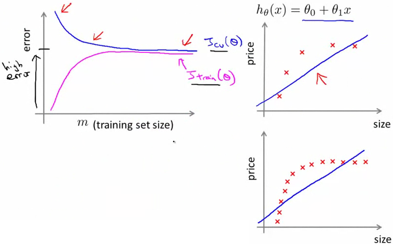
High bias
With this learning curve showing high bias, it becomes clear that more data by itself isn't going to help (there are diminishing returns on \(J_{\text{cv}}\)).
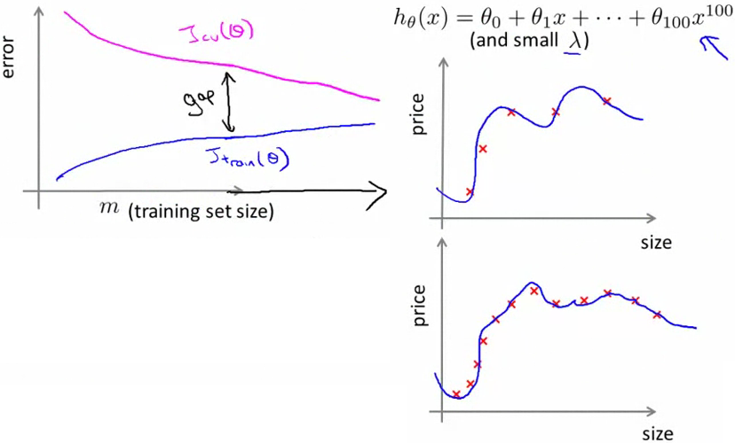
High variance
With this learning curve of high variance, it is clear that more training data would help. If you were to extend the training set size further, \(J_{\text{cv}}\) would indeed diminish.
8.7 deciding what to do next revisited
- get more training examples: fixes high variance
- smaller set of features: fixes high variance
- get additional features: fixes high bias (curr hypothesis too simple, and more features makes it more specific)
- add polynomial features: fixes high bias (similar to additional features)
- decreasing λ: fixes high bias
- increasing λ: fixes high variance
nn and overfitting
- small nn, fewer params (so more prone to underfitting), but computationally cheaper
- large nn, more params (more prone to overfitting), and more computationally expensive (not as problematic as overfitting) (use λ to address overfitting)
single hidden layer is good default (but try training with 2, 3, etc. hidden layers, and then select best \(J_{\text{cv}}\), again using the same procedure given earlier for model selection).
9 machine learning system design
9.1 prioritizing what to work on: spam classification example
First, how should one represent features x? y = spam (1) or non-spam (0). ex. "deal", "buy", "discount", etc. are more likely spam words, while "Andrew", "now" might less likely be spam.
[andrew,buy,deal,discount,...,now,...]
becomes
[0,1,1,0,...,1,...].
In practice, take the n = 10000 to 50000 most frequent words in a training set.
How best to use your time?
- collect lots of data (ex. "honeypot" emails sent to spammers).
- more sophisticated features based on email routing info (from email header).
- look at the message body. "discount", "discounts" as same word? "dealer" or "Dealer"? features about punctuation?
- develop sophisticated algorithms to detect misspelling (ex. m0rtgage).
Prof says even he can't say which of these methods are "best". However, too many researchers will often randomly fixate on one of these options, and fail to enumerate options before making a decision.
9.2 error analysis
Start with alg that you can implement and test quickly on cv data (at most 1 day). Plot learning curves (no way to tell in advance what you need in the absence of evidence; avoids premature optimization (let evidence guide decisions of where to spend time; "data-driven")). Then try error analysis, where you manually examine the hypothesis (in the cv set not the test set) that your algorithm errs on. See if you spot any systematic trend in what type of examples are in error. For example, given mcv = 500, it misclassifies 100 emails. Manually examine the 100 and categorize them based on
- type of email (ex. pharma, replica, steal passwords (phising), other)
- cues (features) that might have helped the algorithm classify them correctly (ex. deliberate mispelling, unusual routing, etc.)
(if multiple algorithms have the same distribution on error type, because you made a quick and dirty implement, this might be more efficient for iteration …)
Numerial evaluation (ex. cv error), a single number, of an algorithm's performance is important (we will see later that coming up with a metric will need more work).
9.3 error metrics for skewed classes
Imagine a classifier gets 1% error on test set (99% correct). However, if for example 0.50% patients have cancer, why not use
predictCancer(x) return y = 0 (ignore x)
This has 0.5% error ("better"), even though it learns nothing. The problem is that it has a high accuracy because of the skewed classes, not because of overfitting, thus it will perform well on the cv set because the cv set will be similarly skewed. In other words, you can always achieve high accuracy on skewed datasets by predicting the most common class, for every input.
A skewed class is when there is a lot more examples for one class than another class (self: ratio of priors not roughly 1?).
So instead of accuracy, try instead precision/recall.
Set y = 1 for the presence of a rare class that we want to detect.
| actual class | |||
| 1 | 0 | ||
| predicted class | 1 | true postive | false positive |
| 0 | false negative | true negative |
precision: of all patients where we predicted y=1, what fraction actually have cancer? ie. tp/# predicted as positive = tp/(tp+fp)
recall: of all patients that actually have cancer, what fraction did we correctly detect as having cancer? ie. tp/# actual positives = tp/(tp+fn)
9.4 trading off precision and recall
How to predict y=1 only if very confident?
In logistic regression, one can modify classification to be, predict 1: \(h_{\theta}(x) \geq 0.7\). This now has a higher precision but lower recall (with predicting y=1 on a smaller number).
What about if we want to avoid missing too many cases of cancer (avoid fn's)? One could lower threshold, \(h_{\theta}(x) \geq 0.3\) (more recall, less precision).
This threshold defines the tradeoff between precision vs. recall.
How to choose the threshold automatically? How to compare precision/recall numbers? One could try the average (P+R)/2. The problem is that y=1 all the time has and average that is \(\gtrapprox 0.5\). Instead, use the F1 score (or F score) \(\tfrac{2PR}{P+R}\). Larger scores mean larger precision and recall.
Similar to model selection, to automatically set a threshold, try a range of values, then evaluate them on the cv set, then the threshold with the best F score.
9.5 data for machine learning
In 2001 (state of the art) a study compared four algorithms: perceptron (logreg), winnow, memory-based, naive Bayes. (will talk about naive Bayes later, rest not used that much now). It found that most give similar performance, and as training set increases, accuracy montonically increases. This led to the quote "it's not who has the best algorthm that wins. It's who has the most data". When is this true and when is it not true?

Similar algorithm performance for accuracy vs. train set size
9.5.1 The large data rationale
Assume feature x in \(\mathbb{R}^{n+1}\) has sufficient info to predict y accurately. (A counter example is predicting housing price from only size and no other features). (A useful test is, given input x, can a human expert confidentally predict y? (seems similar to that "stable regularities" quote in deciding what to try next. If it is unstable, then there is very little to go on, and hence more data does not mean better performance)).
Use a learning algorithm with a large number of params (logreg/linreg with lots of features, or nn with many hidden units), which are low bias algorithms where \(J_{\text{train}}(\theta)\) is small. Use a very large training set that is unlikely to overfit, where \(J_{\text{train}}(\theta) \approx J_{\text{test}}(\theta)\). The implies \(J_{\text{test}}(\theta)\) is small.
9.6 terminology
- Accuracy = (true positives + true negatives) / (total examples)
- Precision = (true positives) / (true positives + false positives)
- Recall = (true positives) / (true positives + false negatives)
- F1 score = (2 * precision * recall) / (precision + recall)
10 SVM
10.1 optimization objective
SVM can be obtain with a slight modification to logistic regression. Consider the term an example (x,y) contributes to \[ y^{(i)} (-\log h_{\theta}(x^{(i)})) + (1 -y^{(i)})(-\log (1 -h_{\theta}(x^{(i)}))) \] where \(h_{\theta}(x)\) is the logistic function. Change \(-\log(h)\) to costy(), which is like \(-\log(h)\), except for y=1, it is zero for y > 1, and linear for \(y \leq 1\), approximating the same slope as \(-\log(h)\), and likewise for \(\text{cost}_0\).
For SVM, the optimization objective is \[ \min_{\theta} C \left[ \sum_{i=1}^m y^{(i)} \text{Cost}_1(\theta^T x^{(i)}) + (1 -y^{(i)})\text{Cost}_0(\theta^T x^{(i)}) \right] + \frac{1}{2} \sum_{j=1}^n \theta_j^2 \] Unlike logreg, it doesn't output a probability, rather the hypothesis outputs 1 (if \(\theta^T x \geq 0\)) else 0.
10.2 large margin intuition
If y = 1, we want \(\theta^T x \geq 1\), not just \(\geq 0\) because we want some "margin".
svm, aka. largin margin classifier.
largin magin intuition here only valid when C is large.
C similar to 1/λ (if the resultant boundary has underfit the training set, since one would like to lower the bias, one can do this by increasing C or decreasing σ2 (for a Gaussian kernel)).
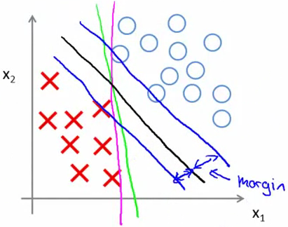
SVM: large margin intuition
10.3 mathematics behind large margin classification
Given column vectors \(u = [u_1,u_2]^T\), \(v = [v_1,v_2]^T\), the norm \(||u|| = \sqrt{u_1^2 +u_2^2}\), and \(u^Tv = p ||u|| = u_1v_1 +u_2v_2\), where p is the signed length of the projection of v onto u. (For a proof, draw a parallelgram with sides \(\vec{a}\) and \(\vec{b}\), then calculate the length of \(\vec{a}+\vec{b}\) using pythagores's theorem as a function of the two lengths).
Simplification: θ0 = 0, n = 2. Objective function is \(\min_{\theta} \tfrac{1}{2} \sum_{j=1}^n \theta_j^2 = \min_{\theta} \tfrac{1}{2} ||\theta||^2\) such that \(\theta^T x^{(i)} \geq 1\) if \(y^{(i)} = 1\), and \(\leq 1\) else.
\(\theta^T x^{(i)} = p^{(i)} ||\theta||\), where \(p^{(i)}\) is the scalar projection of \(x^{i}\) onto \(\theta\). That means we can rewrite the problem as \[ \min_{\theta} \tfrac{1}{2} ||\theta||^2 \text{st}\ \begin{cases} p^{(i)} ||\theta|| \geq 1 & \text{if}\ y^{(i)} = 1\\ p^{(i)} ||\theta|| \leq 1 & \text{if}\ y^{(i)} = 0 \end{cases} \] (so the simplification is that the decision boundary passes through the origin).
(even for non-linearly separatable problems, you still want to choose the largest margin in sum).
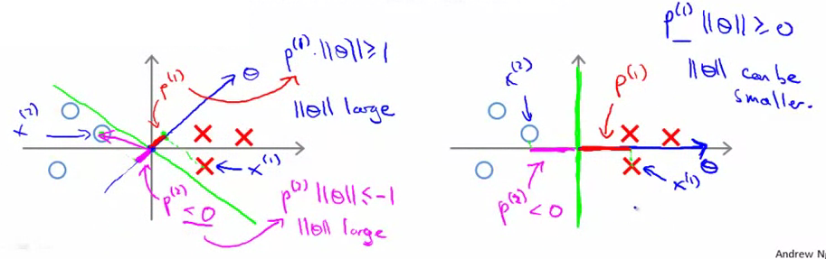
SVM decision boundary: good vs. bad
10.4 kernels I
Using a hypothesis \(\theta_0 +\sum_i \theta_i f_i\), where \(f_i\) are features, can be expensive if the features are higher-order polynomials.
Given x, one could compute a feature by similarity of x to a landmark \[ f_1 = \text{similarity_{aka "kernel"}}(x,l^{(1)}) = k(x,l^{(1)}) = \exp \left(-\frac{1}{2\sigma^2}\cdot ||x -l^{(i)}||^2\right) \] which is a gaussian kernel.
if \(x \approx l^{(1)}\), \(f_1 \approx 1\), and if x is far from \(l^{(1)}\), \(f_1 \approx 0\).
So if x is close to \(l^{(1)}\), but far from the others, the decision might become, predict 1 if \(\theta_0 +\theta_1 f_1 + \approx 0 + \approx 0 \geq 0\). The net effect is that for x near any landmark, predict "1", and for x far away from all landmarks, predict "0". Thus the kernels summed together form the region (it can be irregular because one is summing various Gaussians).

The sum of kernels (two Gaussians in this case) defines a boundary
how to get landmarks? any other kernel types?
10.5 kernels II
how to get landmarks? Given data set, set \(l^{(i)} = x^{(i)}\). Given example x, let \(f_i = k(x,l^{(i)})\), \(i = 1,\dots,m\), and group into a feature vector f, and for a training example \((x^{(i)},y^{(i)})\), group into \(f^{(i)}\) and let \(f_0^{(i)} = 1\).
With an already learnt \(\theta\), given \(x\), compute \(f \in \mathbb{R}^{m+1}\), and predict \(y=1\) if \(\theta^T f \geq 0\).
training: \[ \min_{\theta} C \sum_{i=1}^m y^{(i)} \text{cost}_1(\theta^T f^{(i)}) + (1 -y^{(i)})\text{cost}_0 (\theta^T f^{(i)}) + \frac{1}{2} \sum_{j=1}^m \theta_j^2 \] (note that: \(\sum_{j=1}^n \theta_j^2 = \theta^T \theta\) (ignoring θ0 because we don't regularize it)).
Recall that \(C (= \tfrac{1}{\lambda})\). When it was \(\lambda\), small values gives low bias and high variance, and vice versa. Another parameter to choose is \(\sigma^2\). If \(\sigma^2\) is large, features \(f_i\) vary more smoothly (higher bias, lower variance).
10.6 using a SVM
need to choose C and kernel.
A "linear kernel" (ie. no kernel), predicts \(y=1\) if \(\theta^T x \geq 0\). Use this when n is large, and m (# training examples) is small (want to avoid overfitting).
For a Gaussian kernel, need to choose \(\sigma^2\). Use when n small, and/or m is large. (don't forget to do feature scaling, otherwise units with large numbers will dominate \(||x -l||^2\)).
Not all similarity functions make valid kernels. they need to satisfy "Mercer's theorem" to make sure SVM packages' optimizations run correctly, and do not diverge.
other kernels
- polynomial: k(x,l) = (xT l +c)k (not used much)
- esoteric: string, chi-square, histogram, intersection, etc.
For multiclass, use the package, or use one-vs-all, where you train k SVMs, one to distinguish y=i from the rest, \(i=1,\dots,K\), and get \(\theta^{(1)},\dots,\theta^{(K)}\), then pick class i with largest \((\theta^{(i)})^T x\). (note though, "these are not very elegant approaches to solving multiclass problems. A better alternative is provided by the construction of multiclass SVMs" (src)).
10.6.1 when to use SVM over logistic regression
(n is #features, m is #training examples)
if n is large (relative to m), use logistic regression, or SVM without a kernel ("linear kernel").
if n is small, m is intermediate (ex. n=1 to 1000, m=10 to 10k), use SVM with gaussian kernel.
if n is small, m is large, create/add more features, then use logistic regression or SVM without a kernel (linear kernel).
NN likely to work well for most of these settings, but might be slower to train. (more general applicability, but at the cost of not being able to apply more specialized knowledge or use more info?)
11 clustering
11.1 unsupervised learning - introduction
Unlike supervised learning, no labels given.
11.2 k-means
with input K and training set \(\{x^{(i)}\}_{i=1}^m\), where \(x^{(i)} \in \mathbb{R}^n\)
- rand init K cluster centroids
- cluster assignment: assign \(c^{(i)}\) to the index of cluster centroid closest to \(x^{(i)}\)
-
move centroid: assign \(\mu_k\) to the average of points assigned to cluster k
- eliminate a centroid if no points assigments, or randomly reinitalize
- repeat until centroid movement small or assignments don't change much
11.3 optimization objective
Let \(\mu_{c^{(i)}}\) be the cluster centroid of cluster to which example \(x^{(i)}\) has been assigned. The optimization objective (or distortion function) is \[ J(c^{(1)},\dots,c^{(m)},\mu_1,\dots,\mu_K) = \frac{1}{m}\sum_{i=1}^m || x^{(i)} - \mu_{c^{(i)}} ||^2 \] So k-means minimizes wrt c (with μ fixed), then wrt μ with c fixed.
(not possible for J to sometimes increase?)
11.4 random initialization
Should have \(K \lt m\). Randomly pick K training examples, set \(\mu_1,\dots,\mu_K\) equal to these K examples (but make sure they don't overlap).
(Why wrt existing examples, and not the entire space? …)
To more like get closer to the global optima, run k-means 50 to 1000 times, then pick run where clusters give lowest J.
11.5 choosing the number of clusters
most common is to choose k by hand.
(underdetermined, or ambiguous what to choose?)
elbow method: vary K and compute J for each K. Choose K where the "elbow" appears (where the distortion goes down "fast", then goes down "slow"). problem: curve often ambiguous.
Often k-means is run to get clusters for some later/downstream purpose. So eval k-means based on a metric for how well it performs for that later purpose.
12 dimensionality reduction
12.1 motivation
Dimensionality reduction can reduce memory requirements, and make learning algorithms run faster. Furthermore, one might lose track of features (due to many teams), so some features might be highly redundant, and this method would automatically remove that redundancy. Furthermore, it helps visualize higher dimensional data.
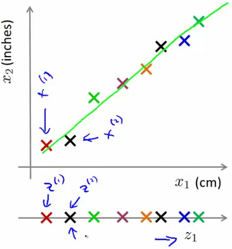
Projecting for compression from 2D to 1D, $x(1) ∈ \mathbb{R}2 → z(1) ∈ \mathbb{R}$
One problem however is that in dimensionality reduction, the new \(z_i\) dimensions don't automatically have a meaning assigned.
12.2 PCA: problem formulation
Note, first do mean normalization and feature scailing.
In PCA, it tries to find a direction onto which to project the data so to minimize projection errror (distance from point to projection surface). More formally, it projects onto a linear subspace spanned by \(u^{(1)}\) to \(u^{(k)}\).
How does PCA relate to linear regression? In linear regression, it minimizes sums of squares (vertical distance from point to \(x_1\)), while with PCA, it is the orthogonal distance to the line. Furthermore, in lienar regression, it uses x to predict y, but in PCA, there is no distinguished feature (all are treated the same).
12.3 PCA: algorithm
input set: \(\{x^{(i)}\}_{i=1}^m\).
pre-processing: feature scaling and mean normalization
algorithm:
-
compute the covariance matrix \(\Sigma = \tfrac{1}{m} \sum_{i=1}^n
(x^{(i)})(x^{(i)})^T = \tfrac{1}{m} X^T X\)
- has nice properties
-
compute eigenvalues of matrix \(\Sigma\)
-
[U,S,V] = svd(Sigma)(singular value decomposition), which is somewhat more stable thaneig)
-
- \(U = [u^{1} \dots u^{(n)}]\) (as column vectors), and take first k columns, called \(U_{\text{reduce}}\)
- \(z = U_{\text{reduce}}^T \vec{x}\)
12.4 Choosing the number of principle components
It tries to minimize the average squared projection error \[ \frac{1}{m} \sum_{i=1}^m ||x^{(i)} -x_{\text{approx}}^{(i)}||^2 \] The total variation in the data is \(\tfrac{1}{m} \sum_{i=1}^m ||x^{(i)} -0||^2\), how far each is from the origin.
Typically to choose k, select k to be the smallest value such that ratio of average squared projection error over total variation is less than ε (ie. "(1- ε) of variance is retained").
How to choose k? One (bad) way is to start with k =1, then check if the
ratio less than 0.01, and increment k if not. This way is
inefficient. Instead, a better way is, because \(S\) is diagonal
(diag(s_{11},\dots,s_{nn})), for given a k, compute
\(1 -(\sum_{i=1}^k s_{ii}/\sum_{i=1}^n s_{ii})\).
(there's another formulation that looks at eigenvalues and whatnot).
12.5 Reconstruction from compressed representations
To recover the original data (aka. reconstruction), do \(x_{\text{approx}}^{(i)} = U_{\text{reduce}} z^{(i)}\).
12.6 Advice for applying PCA
Supervised learning speedup: From the training set, run PCA on the examples without the labels, then use this new training set instead.
Note, the mapping \(x^{(i)} \to z^{(i)}\) should be defined only by running PCA on the training set. The mapping can then be applied to the examples in the cv and test sets.
(PCA useful for compression or visualization)
Bad use of PCA: to prevent overfitting: use \(z^{(i)}\) instead of \(x^{(i)}\) to reduce the number of features to k < n, because with fewer features, it less likely to overfit. The problem is that it might work OK, but you're throwing info, so use regularization instead, which will give at least as good an answer.
Another bad use of PCA is in the design of a ML system. Get training set, reduce with PCA, train logreg on the result, then test on the test set with the map. Instead, before using PCA, ask what happens if we do this without PCA? See if \(x^{(i)}\) works, and if it doesn't, then use PCA and \(z^{(i)}\).
13 anomaly detection
13.1 problem motivation
Given \(\{x^{(i)}\}_{i=1}^m\) (assume non-anomalous), is \(x_{\text{test}}\) anomalous? Build a model p(x), and if \(p(x_{\text{test}}) \lt \epsilon\), flag as an anomaly.
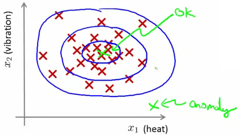
Anomaly detection example
(sort of like a significance test when using a hard threshold)
13.2 algorithm
(Density estimation) Given \(\{x^{(i)}\}_{i=1}^m\) where \(x \in \mathbb{R}^n\), model \[ p(x) = p(x_1; \mu_1, \sigma_1^2)p(x_2; \mu_2, \sigma_2^2) \cdots p(x_n; \mu_n, \sigma_n^2) = \prod_{j=1}^n p(x_j; \mu_j, \sigma_j^2) \] \(x_1 \sim N(\mu_1,\sigma_1^2)\). This model corresponds to a independence assumption of \(x_1\) to \(x_n\) (though it works ok even without that assumption).
algorithm
- choose features \(x_i\) indicative of anomalous examples (ie. will take unusually small/large values for an anomaly).
- fit parameters \(\mu_1,\dots,\mu_n\), \(\sigma_1^2,\dots,\sigma_n^2\) to training set where \(\mu_j = \tfrac{1}{m} \sum_{i=1}^m x_j^{(i)}\) and \(\sigma_j^2 = \tfrac{1}{m} \sum_{i=1}^m (x_j^{(i)} -\mu_j)^2\)
- given example \(x\), compute \(p(x)\) where
- anomaly if \(p(x) \lt \epsilon\)
13.3 developing and evaluating an anomaly detection system
Assume we have some labeled data. Have a training set with non-anomalous examples (though if a few errors slip in, it is ok). Then define a cv and test set (should use different examples for each).
Fit \(p(x)\) on training set \(\{x^{(i)}\}_{i=1}^m\). On a cv/test example, predict \(y = 1[p(x) \lt \epsilon]\). Since y=0 is much more common (see error metrics for skewed classes), classification accuracy is not good. Instead, use TP, FP, FN, TN, precision/recall, or \(F_1\) score. (Can also use cv set to choose parameter \(\epsilon\)).
13.4 anomaly detection vs. supervised learning
anomaly detection
- very small number of positives (0-20 is common)
- large number of negative examples
- many different "types" of anomalies. Hard for any algorithm to learn from positive examples what the anomaly looks like; future anomalies might look nothing like any of the existing anomalous examples
- ex. fraud detection, manufacturing (ex. aircraft engines), monitoring machines in a data center. (though if you are large enough, each of these can become a supervised learning problem (and presumably, if the positive examples dry up, it becomes an anomaly detection problem)).
supervised learning
- large number of positive and negative examples
- enough positives examples for algorithms to get a sense of what positives examples look like, future positive examples likely to be similar to ones in training set
- email spam classification, weather prediction (sunny/rainy/etc.), cancer classification
13.5 choosing what features to use
for non-Gaussian features, try a transformation.
13.5.1 error analysis
want \(p(x)\) large for non-anomalous examples \(x\), and \(p(x)\) small otherwise.
most common problem, \(p(x)\) is comparable for non-anomalous and anomalous examples.
choose features that take on unusually large or small values in the event of an anomaly.
13.6 multivariate Gaussian distribution
If we look at each feature individually they may fall within acceptable limits. Instead, model all at once.

An anomaly only detectable by two features simulatenously
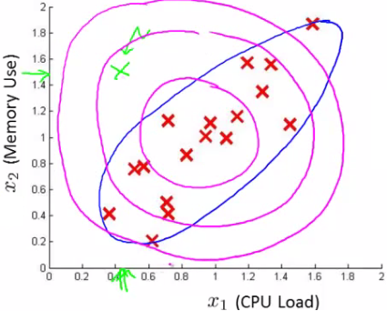
Two correlated features treated independently uses the circle (magenta), while taken together it uses covariance (blue)
In \(\Sigma\), each diagonal corresponds to the variance of that feature in row \(i\). Each off-diagonal corresponds to the covariance in row i and column j. When the covariance is zero, a mesh plot shows a circle; the data for these two are "scattered". The closer it is to 1, the more one would see a "line" (x and y start to grow together).
13.7 applying multivariate Gaussian distribution to anomaly detection
Use \(\mu\) and \(\Sigma\), and plug into the MVN, then flag as an anomaly when \(p(x) \lt \epsilon\).
How does the product model relate from the MVN? It corresponds to the MVN where ellipses are axis-aligned (ie. no rotation, ie. no covariance).
The original model is computationally cheaper (doesn't have to compute \(\Sigma^{-1}\), but the MVN automatically captures correlations between features). Original model OK even if m (training set size) is small, while MVN requires \(m \gt n\) (use \(m \geq 10n\) in practice), or else \(\Sigma\) is singular (second case is when there are redundant features (ie. linearly dependent), such as \(x_1 = x_2\), or \(x_3 = x_4 +x_5\)).
14 recommender systems
14.1 problem formulation
Let \(n_u\) be the number of users, and \(n_m\) the number of movies. Set \(r(i,j)\) to 1 if user j has rated movie i. \(y^{(i,j)}\) is the rating given by user j to movie i (defined only if \(r(i,j)=1\)).
Predict missing movies.
(sees a lot like a missing data problem, or something related to work on imputation)
14.2 content-based recommendations
(note that \(n\) is the number of features not counting \(x_0\)).
For each user j, learn \(\theta^{(j)} \in \mathbb{R}^{n+1}\). Predict user j as rating movie i with \((\theta^{(j)})^T x^{(i)}\).
\(\theta^{(j)}\) is the parameter vector for user \(j\), \(x^{(i)}\) is a feature vector for movie i. \(m^{(j)}\) is number of movies rated by user j. The optimization objective is \[ \min_{\theta^{(j)}} \frac{1}{2m^{(j)}} \sum_{i:r(i,j)=1} ((\theta^{(j)})^T(x^{(i)}) -y^{(i,j)})^2 +\frac{\lambda}{2m^{(j)}}\sum_{k=1}^n (\theta_k^{(j)})^2 \] For multiple parameters \(\theta^{(1)},\dots,\theta^{(n_u)}\) (ie. for multiple users) \[ \min_{\theta^{(1)},\dots,\theta^{(n_u)}} \frac{1}{2} \sum_{j=1}^{n_u} \sum_{i:r(i,j)=1} ((\theta^{(j)})^T(x^{(i)}) -y^{(i,j)})^2 +\frac{\lambda}{2}\sum_{j=1}^{n_u}\sum_{k=1}^n (\theta_k^{(j)})^2 \] Gradient descent update is \[ \theta_k^{(j)} := \theta_{k}^{(j)} -\alpha\left( \sum_{i:r(i,j)=1} ((\theta^{(j)})^Tx^{(i)} -y^{(i,j)})x_k^{(i)} +\lambda \theta_k^{(j)} \right)\ k\ne0 \] and similarly for \(x_k^{(i)}\). (drop the regularization term when \(k=0\)).
One problem with this approach is that it might be hard or expensive to get features for all products. (In addition, there might be many users with many missing ratings).
14.3 collaborative filtering
Here we don't have \(x^{(j)}\), but \(\theta^{(i)}\) for each user.
Given \(\theta^{(1)},\dots,\theta^{(n_u)}\), learn \(x^{(i)}\) \[ \min_{x^{(i)}}\frac{1}{2}\sum_{j:r(i,j)=1} ((\theta^{(j)})^Tx^{(i)} -y^{(i,j)})^2 +\frac{\lambda}{2}\sum_{k=1}^n (x_k^{(i)})^2 \] For multiple features, given \(\theta^{(1)},\dots,\theta^{(n_u)}\), learn \(x^{(1)},\dots,x^{(n_m)}\) \[ \min_{x^{(1)},\dots,x^{(n_u)}} \frac{1}{2} \sum_{j=1}^{n_m} \sum_{i:r(i,j)=1} ((\theta^{(j)})^T(x^{(i)}) -y^{(i,j)})^2 +\frac{\lambda}{2}\sum_{j=1}^{n_m}\sum_{k=1}^n (\theta_k^{(j)})^2 \] Note that for this chicken and egg problem (does \(x\) or \(\theta\) come first), one can randomly guess \(\theta \to x \to \theta \to x \to \dots\). (requires some users' rating, and movies being rated)
14.4 collaborative filtering algorithm
A more efficient algorithm to use is to minimize both simulatenously \[ \min_{x^{(1)},\dots,x^{(n_m)},\theta^{(1)},\dots,\theta^{(n_u)}} J(x^{(1)},\dots,x^{(n_m)},\theta^{(1)},\dots,\theta^{(n_u)}) = \frac{1}{2} \sum_{(i,j):r(i,j)=1} ((\theta^{(j)})^Tx^{(i)} -y^{(i,j)})^2+ \frac{\lambda}{2} \sum_{i=1}^{n_m} \sum_{k=1}^n (x_k^{(i)})^2+ \frac{\lambda}{2} \sum_{j=1}^{n_u} \sum_{k=1}^n (\theta_k^{(j)})^2 \] This time \(x\in\mathbb{R}^n\) (so drop the \(x_0=1\) convention). Same with \(\theta\in\mathbb{R}^n\) (we're looking at all features).
Notice that we are still calculating for any given movie i and user j their parameters even if \(R(i,j) = 0\).
- Init \(x^{(1)},\dots,x^{(n_m)},\theta^{(1)},\dots,\theta^{(n_u)}\) to small random values
- Minimize \(J()\)
- for a user with \(\theta\) and a movie with (learned) features \(x\), predict a rating \(\theta^Tx\).
14.5 vectorization: low rank matrix factorization
Instead of \(y^{(i,j)}\), create a matrix \(Y\). Predicted ratings is a matrix \((\theta^{(j)})^T(x^{(i)})\) in i,j.
A simpler way to write this is to define \(X = [x^{(1)},\dots,x^{(n_m)}]^T\) (as rows) and \(\Theta = [(\theta^{(1)})^T,\dots,(\theta^{(n_u)})^T]\) (as rows). Compute \(X\Theta^T\) (The algorithm is also called low rank matrix factorization)
How to find movies j related to movie i? A similarity measure is \(||x^{(i)} -x^{(j)}||\).
14.6 implementation detail: mean normalization
\(Y \leftarrow Y -\mu\) (where \(\mu\) is calculated without new user having no ratings)
for user j on movie i, predict \((\theta^{(j)})^T (x^{(i)}) +\mu_i\)
15 large-scale machine learning
15.1 learning with large datasets
first look at smaller samples and plot training curves to see whether bias is high.
15.2 stochastic gradient descent
in batch gradient descent, can't store all records, so would have to stream through and accumulate the sum. Would have to do this for each step.
\[ \text{cost}(\theta, (x^{(i)},y^{(i)})) = 1/2 (h_{\theta}(x^{(i)}) -y^{(i)})^2 \]where \[ J_{\text{train}}(\theta) = \frac{1}{m}\sum_{i=1}^m \text{cost}(\theta, (x^{(i)},y^{(i)})) \]
- shuffle dataset
-
repeat (1-10x)
-
for \(i=1,\dots,m\)
- \(\theta_j := \theta_j -\alpha\frac{\partial}{\partial \theta_j} \text{cost}(\theta, (x^{(i)},y^{(i)}))\)
-
(ie. \(\theta_j := \theta_j -\alpha (h_{\theta}(x^{(i)}) -y^{(i)})x_j^{(i)}\))
- for every \(j=0,\dots,n\)
-
for \(i=1,\dots,m\)
circutoursly moves towards the minimal, then wanders around the region of the global minimal.
15.3 mini-batch gradient descent
in each iter
- batch: use all m examples
- stochastic: use 1 example
- mini-batch: use b examples, where b is the batch size (typically 2-100)
mini-batch might do better than stochastic because vectorization could allow a slight speed up. One disavantage is having to select b.
15.4 stochastic gradient descent convergence
During learning, compute \(\text{cost}(\theta, (x^{(i)},y^{(i)}))\) before updating \(\theta\). Every 1000 iterations (say), plot the cost averaged over the last 1000 examples processed by the algorithm.
As 1000 is not much, the plots of num of iters vs. cost might be noisy.

Small vs. large learning rate

1000 vs. 5000 examples

More averaging required to see the thrend in noise

Divergence when $α$ too large
As for \(\alpha\), one could slowly decrease \(\alpha\) over time if we want \(\theta\) to converge. That said, it might take more time to fiddle with the constants.
15.5 online learning
repeat forever
-
get (x,y) corresponding to user
-
update θ using (x,y) (one example, with no fixed training set needed to store)
- \(\theta_j := \theta_j -\alpha(h_{\theta}(x) -y)x_j\), \(j=0,\dots,n\)
-
update θ using (x,y) (one example, with no fixed training set needed to store)
This algorithm can adapt to user preferences.
predicted CTR: \(p(y=1|x;\theta)\), and then use this to show the most probable.
15.6 map/reduce and data parallelism
Can the algorithm be expressed as computing the sums of functions of the training set? Most can.
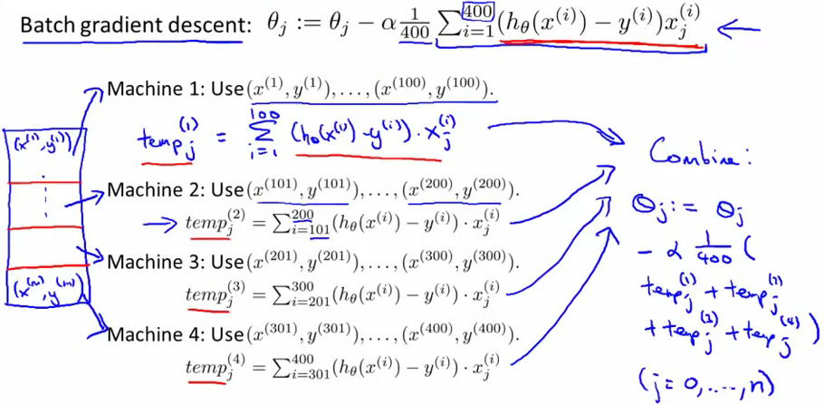
map/reduce with batch gradient descent
16 application example: photo OCR
16.1 problem description and pipeline
pipeline
- text detection
- character segmentation
- character classification
16.2 sliding windows
pedestrian detection a bit easier because aspect ratio mostly the same, compared to text detection.
- select an aspect ratio.
- collect positive and negative examples (ex. pictures of people, and pictures of something other than people)
- then run image patch across the image, sliding it over a bit by the step size (or stride) each time
- then use a larger image patch, resizing it to same size as those used in the classifier
- The result is a grayscale that shows the "1" and "0".
- then apply an expansion algorithm (for every pixel, is it within some distance of a white pixel? If so, also colour it white)
character segmentation
- positives are splits between two characters
- negatives are whole characters or blanks for the given aspect ratio
- use a 1D sliding window on the rectangle of text
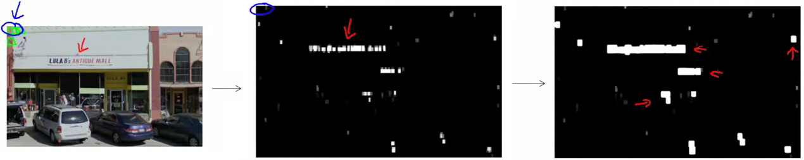
Photo OCR pipeline: From photo, to pos/neg grayscale, to expansion
16.3 getting lots of data: artificial data synthesis
create new data, or amplify an existing data set
how to amplify?
- modern computers have a large font library. so take a font, and paste against a random background, then distort a bit
synthesize data by introduction distortions. ex. "A", and warp the letter. ex. audio, mixed in with bad connections, crowd, machineries, etc..
note, the distortion should be representative of the type of noise/distortions in the test set. Usually it does not help to add purely random/meaningless noise. (ex. "A" and adding Gaussian noise).
note, before creating synthetic data, check the learn curves, or increase the number of features, or hidden units in a NN.
q: How much work would it be to get 10x as much data as we current have? Do a quick estimate.
in addition to data synthesis, DIY collecting/labelling, there is crowd sourcing.
16.4 ceiling analysis: what part of the pipeline to work on next
Which part of the pipeline should you spend the most time trying to improve?
- imagine for character accuracy, a single real number, the overall system has 72% accuracy.
- then simulate in one part 100% accuracy. What then is overall system accuracy?
- then do this for each next stage until all parts downstream are simulated as perfectly accurate
ex. [72, 89, 90, 100]. Take the difference between parts, [17, 1, 10], suggesting maybe you don't want to work on part number 2.
In other words, how much could you gain if one part was made perfect?
Date: 2013-04-05 21:31:53 EDT
HTML generated by org-mode 7.4 in emacs 24